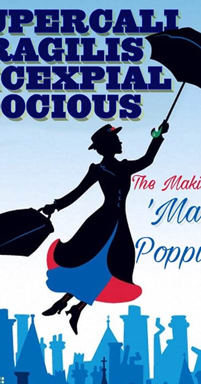
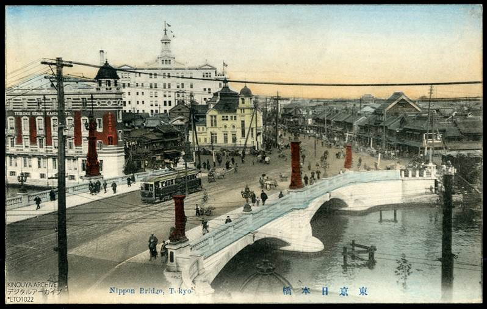
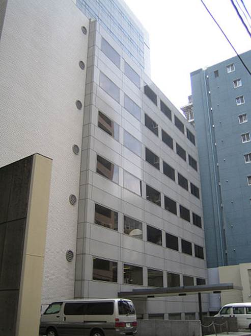
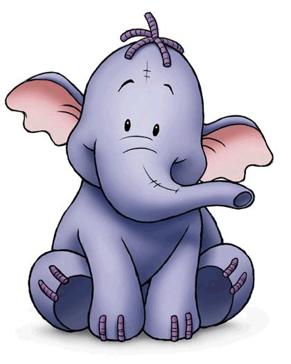

1. 出典：
Ø 选项1~选项3（前半程1）：
Ø 黎明踏浪号
Ø 御触
Ø 百亩林
Ø 屹耳
Ø 猫头鹰
Ø 东京环球剧场
Ø 哥斯拉
Ø 柳利
Ø 小猪
Ø 鹅妈妈童谣
Ø 谍海飞龙
Ø 选项4~选项8（前半程2）：
Ø 罗勒酱
Ø 大男人主义
Ø 查理的天使
Ø 翳影之国
Ø "三只小猪"餐厅
Ø 泪水之湖
Ø 恋母情结
Ø 北海盗、南海盗
Ø Supercalifragilisticexpialidocious
Ø 零和博弈
Ø 周刊少年Jump
Ø 选项9~结束（后半程）：
Ø 立体主义
Ø 巴别塔
Ø 大正时期
Ø 濑田贞二
Ø 阿拉伯起义
Ø 海狸
Ø 熵增原理
Ø 约翰·温德姆
Ø 亚当的苹果
Ø 大业物
Ø 東海苑
2. 剧情：
Ø 前半程攻略
Ø 选项1
Ø 选项2
Ø 选项3
Ø 共通部分3
Ø 选项4
Ø 共通部分4
Ø 选项5
Ø 共通部分5
Ø 选项6
Ø 共通部分6
Ø 选项7
Ø 共通部分7
Ø 选项8
Ø 共通部分8
Ø 半程总结
Ø 后半程：
Ø 选项9
Ø 选项10
Ø 9月7日
Ø 9月13日
Ø 9月14日
Ø 9月15日
Ø 关于结局的整理：
Ø 结局5：九月留下
Ø BAD END
1. 出典：
² Dawntreader Chronicle（第六章标题）
出自《纳尼亚传奇》，黎明踏浪号是一艘壮观的帆船，外观灵感来自巨龙。船首是龙的头、船尾是龙尾巴、左右船舷则以龙翼装饰。尽管黎明踏浪号不过是黄金时代航行的纳尼亚大船的影子，但书中称她为一艘美丽的船，几乎是一件艺术品。 她由帆驱动，但也可以用桨划船。
在原作中，黎明踏浪号的航行有两个目的，一个是找到分别在七座岛屿（原著）上的七个领主，另一个是航行到世界的东端（在雷普契普的领导下），因为有传言那边是阿斯兰的国家。这场航行是以尤斯塔斯（四兄弟中的表弟）的第一人称日记的形式被记录下来的。在Forest里，目的变成了寻找失踪的骑士，但是二者的主题非常类似。
PS：第六章的标题Dawn Treader Chronicle，其中Chronicle比较贴近原作的标题Chronicles of Narnia，但是对中文翻译就不太友好。日文标题是：傘びらき丸航海記，傘和朝在日文上的读法接近，代表Flint。丸代表船，航海記是航行的意思，跟Voyage的意思相近。这个标题的意思是黎明踏浪号的航行。
Figure 1. 黎明行者号
即trattoria，一般为意大利风格的饮食场所。通常不如ristorante正式，但比osteria更为正式。传统的trattoria一般没有印刷菜单，食物不是很高级但会很丰富（大多数遵循区域和当地食谱），有时甚至可以在普通餐桌上以家庭式享用。近几十年来，这种家庭式的传统餐厅已经不再多见，一些高级餐厅也开始采用“ trattoria”这个名字。
刈谷所在的意大利餐厅在现实的西新宿7丁目有一家名字接近的店。
Figure 2. 现实中新宿的Trattoria Quarto餐厅
埃德蒙·斯宾塞 （Edmund Spenser，1552年－1599年1月13日），是英国著名诗人、桂冠诗人。由于其崇尚亚瑟王传奇中的骑士精神，所以效仿亚瑟王传奇的手法，写下了史诗《仙后》。最初的计划是共有12圆桌骑士，代表12种美德，用前12卷描写每个骑士，再用后12卷描写亚瑟王，但是《仙后》最后只完成了六卷。
亚瑟王传说，是西元十二世纪由遍历欧洲的吟游诗人开始传颂的。曾经统治英国的凯尔特民族，在西元一世纪的时候被罗马帝国所统治。历经六世纪以后，日耳曼民族相继入侵，其势力渐趋衰微，终于被迫让出英国王位。传说中，亚瑟就是在日耳曼民族入侵的这段时期里面，以凯尔特人的英雄身份登场。他率领各部落在名为巴顿山之役的交战中一举击溃属于日耳曼民族一支的萨克森人，是中世纪英国著名的传奇人物。
但是亚瑟的形象却随着传说故事的演进而不断变化，最后演变成为统治不列颠之王，成为将兰斯洛特、崔斯坦等传说中骑士收于麾下的“圆桌骑士团”首领，拥有至高荣誉的英雄。
王者之剑（Excalibur）与石中剑（The Sword in the Stone）是亚瑟王至尊的王权象征，佩带着这把具有精灵魔力的王者之剑，令众骑士俯首称臣，不仅确立他自己的王位，也在众多的战役之中赢得胜利，凯旋而归。
Figure 3. 亚瑟王与12圆桌骑士
出自希腊神话的复仇女神，涅墨西斯。神话中的涅墨西斯会对在神祇座前妄自尊大的人施以天谴，代表无情的正义。
在Forest中，这是唯一会根据使用者的特质改变形态的gift，也是准备给刈谷用于复仇的陷阱。
Figure 4. 复仇女神Nemesis（by拉斐尔）
在西欧传说中，国王可以通过触摸治疗疾病，这被称之为“御触（royal touch）”。这只能天赋据说是通过国王供奉的一种特别的油来传承的。当然也有一些人不吃这一套，伏尔泰就声称如果路易十四真有能力用触摸治疗疾病，那他应该能治愈他的情妇，但是并没有。
出自亚瑟王的传说，湖中妖女是英格兰及威尔士神话中出现的数名拥有神奇魔法的水中妖精，实际上全是阿瓦隆湖中出身的既美丽又高贵邪恶的少女，她们居住在湖水中用神奇魔法创造出来的魔幻城堡中，薇薇安（Viviane）则是她们的代表。
湖中妖女主要登场于亚瑟王传说，由于是她赐予了亚瑟王传说中的王者之剑与剑鞘而出名，因此她们亦被称作“薇薇安（Viviane）”、“妮妙（Nimue）”、“妮妮安妮（Ninianne）”、“妮薇安（Nivian）”、“妮姆薇（Nimueh）”以及“伊莱恩（Elaine）”等众。在《亚瑟之死》中，湖中妖女统一使用“薇薇安”这个名字。
Figure 5. 湖中妖女尼妙
百亩林，英国伦敦郊外的东苏塞克斯（East Sussex）的农场附近的亚士顿森林（Ashdown Forest）就是《小熊维尼》故事的发祥地。书中的百亩林的灵感就源自这个500亩的大森林。
Figure 6. 《小熊维尼》中的百亩林地图
《小熊维尼》中的角色屹耳，一头年老的灰色小毛驴，背后钉着他的尾巴。出演了众多小熊维尼系列作品。它悲观、过于冷静、自卑、消沉，是主人公小熊维尼的好朋友。
Figure 7. 屹耳
《小熊维尼》中的角色猫头鹰，十分喜欢说话，常常滔滔不绝地说个不停。在百亩森林中，它 "好像" 是最有学问的人，不过他常常拼错英文字，闹出不少笑话。
Figure 8. 猫头鹰
东京环球剧场（The Globe Tokyo）是东京新宿区百草町的一家剧院。 703个座位。博物馆于1988年4月8日开放。目的是为了推及莎士比亚的作品。剧场外观设计灵感来源于莎士比亚曾经活跃的英国伦敦环球剧院，仿其外形而建成，莎士比亚时代的延展舞台和包围式舞台的三层圆形空间的观众席是剧院的典型特征。
Figure 9. 东京环球剧场
哥斯拉，怪兽之王，是日本流行文化及全球最知名的代表符号之一，首次出现于1954年电影《哥斯拉》中。从那时起，哥斯拉就已经成为一个世界性的流行文化符号，主演了31部电影，也出现在其他媒体中，包括视频游戏，小说，漫画，电影等。
2015年6月，日本东京新宿区区长吉住健一为怪兽哥斯拉颁发了“特别住民票”，使其成为新宿区的“居民”。同时，哥斯拉还获得了“新宿旅游大使任命书”。
Figure 10. 哥斯拉电影海报
拉蒙·柳利，其名于法语中的异体译作雷蒙·吕尔(Raymond Lulle)，加泰罗尼亚作家、逻辑学家、方济各第三会会士和神秘主义神学家。他创作了加泰罗尼亚文学第一部重要作品，促进了加泰罗尼亚语的发展。其手稿显示他在选举理论有着超前的研究成果。他还被认为是计算理论的先驱，影响了莱布尼茨等人。
出生于马略卡王国的马略卡（今西班牙帕尔马），在马略卡王宫中成长，身为骑士，却带有抒情诗人的特色。约在30岁时他在神视中见到基督钉在十字架上，从此放弃宫廷生活，游历北非和小亚细亚，在穆斯林中传播基督教。
Figure 11. 卢利像
小猪个子很小，常常穿著一件粉红色的横条衣服，是小熊维尼最好的朋友。它们俩常常结伴去探险，是小熊维尼故事中一个可爱的人物。
Figure 12. 小猪
鹅妈妈，是一个典型的乡村妇女，其被认为是鹅妈妈故事跟童谣的原作者。至今为止尚没有任何特定的作家被认定就是鹅妈妈，这个名字最早在一部韵体诗体裁的周记中被提及，且在好几年间经常性的出现，Jean Loret的《La Muse Historique》（1660年）：...comme un conte de la Mere Oye （“就像一则鹅妈妈故事”）。童话体裁的创始者夏尔·佩罗，在1695年使用他儿子的名字来出版一部名为“Contes de ma mère l'Oye”（即“鹅妈妈童谣”）的童话集。
在1765年，John Newbery的《鹅妈妈童谣》将注意力的重点由童话故事转移至童谣，且在英语世界中这一直到最近这都是对鹅妈妈意义最深重的改变。
Figure 13. 鹅妈妈童话集
挪亚方舟，又译诺亚方舟，是《希伯来圣经·创世纪》中的故事，一艘根据上帝的指示而建造的大船，其依原说记载为方形船只，但也有许多的形象绘画描绘为近似船形船只，其建造的目的是为了让诺亚与他的家人，以及世界上的各种陆上生物能够躲避一场上帝因故而造的大洪水灾难，记载中诺亚方舟花了几十年才建成，这段故事分别被纪录在《希伯来圣经·创世记》（《旧约圣经·创世记》）以及伊斯兰教的《古兰经》。
Figure 14. 诺亚方舟想象图，古斯塔夫·多雷于19世纪中后期所绘
电影《谍海飞龙》（英文原名《Our Man Flint》）的主角名叫Derick Flint，这是一部仿照007系列影片拍摄的侦探片。为了争取对世界的控制权，敌国采用控制大气环境的方法，对冰山的融化、火山的催发都运用得得心应手，以此改变世界的气候条件，来达到控制世界的目的。海湾处在非常危急的关头，需要寻找一位能够执行艰巨任务的间谍。在所有的推荐名单上都有Flint的名字，说明在人们心目中不辱使命者非他莫属。代号0008的Flint凭借一枚射向他的毒镖的成分配比，断定杀手来自马尔塞利斯，于是驾机前往，在那里与罗德尼一伙展开殊死较量，捣毁敌方总部，赢得了胜利。在好来坞卖座电影排行榜中，本片位居1966年排行前十名，又列入科幻电影全球票房排行100名。
Basil是一种叫罗勒的香草，是用于制作罗勒青酱的原料。
罗勒青酱是 Pesto alla Genovese 的译名，意思是源自热内亚的捣碎酱汁。
Pesto 来自意大利词 Pestare，意思仅为在石臼中捣碎，Genovese 是指以 Genoa 为发源地。历史可追溯到19世纪，热内亚人把罗勒叶松仁和大蒜干酪橄榄油混一起捣成酱，用来拌意大利面或抹面包。
在人们眼中，罗勒青酱早已成为热内亚的标志。但若直接把 Pesto 理解为罗勒青酱，西西里人不服，因为他们的 Pesto 是西红柿和杏仁弄的。
Figure 15. 罗勒香草（左）与罗勒青酱（右）
西西里是意大利南部的一个自治区。西西里占地25,708平方公里，人口数为500万，是意大利最大的区。同时也是地中海最大的岛。而西西里岛周边几个中小型的岛屿也被纳入西西里区域范围。
Figure 16. 西西里岛位置图
沙文主义原指极端的、不合理的、过分的爱国主义（因此也是一种民族主义）。如今的含义也囊括其他领域，主要指盲目热爱自己所处的团体，并经常对其他团体怀有恶意与仇恨（排外主义）。
词源是拿破仑手下的一名（有可能是位文艺上杜撰的）士兵尼古拉·沙文（Nicolas Chauvin），他由于获得军功章对拿破仑感恩戴德，对拿破仑以军事力量征服其他民族的政策狂热崇拜。而“沙文主义”这个名词则首先出现在法国的一部戏剧“三色帽徽”中，以讽刺的口吻描写沙文的这种情绪。后来这个词被广泛应用，如大国沙文主义、民族沙文主义等，还曾被女权运动的领袖用于“男性沙文主义”（相当于汉语中的“大男人主义”）。英语中有一个对等的词，是Jingoism。所以经过演变，如今“沙文主义”这个词在英语中更多场合中指种族歧视与性别歧视，尤其是后者。沙文主义者一般都是对自己所在的国家、民族和团体感到骄傲，因此看不起其他的国家、民族和团体。原文中的用词是“男尊女卑”。
 Miss和Ms
Miss和Ms
前者用于称呼未婚女士，后者用于不了解该女子的婚姻情况。刈谷因为对方用了Miss而感到厌恶。
Figure 17. “男性沙文主义”的海报
《查理的天使》（台湾译《霹雳娇娃》）是一部犯罪电视剧。本剧于1976年9月22日播放，至1981年6月24日完结，总共有五季，110集。本剧由伊万·戈夫和本·罗伯茨创作，艾伦·斯班林监制。故事描述三个女生为一个虚构的私家侦探机构工作，她们的老板名叫查理（约翰·佛塞斯配音），是一个从来不在影片中现身的角色，仅用电话与她们联络。在影集结束时他曾以一个全副装备打扮的外科医生现身。
Figure 18. 《霹雳娇娃》剧照
即《指环王》里中土大陆上黑暗魔君索伦的领地——魔多。《魔戒》中有这样一首诗：
苍穹下，精灵众王得其三；
石殿中，矮人诸侯得其七；
尘世间，必死凡人得其九；
魔多翳影，王座乌沉，黑暗魔君执其尊。
魔多翳影，邪暗深处，
统御余众，魔戒至尊，
罗网余众，魔戒至尊，
禁锢余众，魔戒至尊。
迪士尼制作过许多《小熊维尼》系列动画，这里指的是迪士尼从1966年开始连续制作播放的《小熊维尼》系列短篇动画。虽然在世界范围内产生了很大影响，但也因为把故事地点从英国改为美国，取消了原著中提到的童谣，而代以谢尔曼兄弟制作的音乐等等美国化改编饱受批评。
约翰·坦尼尔（John Tenniel；1820年2月28日－1914年2月25日），英国插画家及社会活动家，因创作《爱丽丝梦游仙境》及其续集《爱丽丝镜中奇遇》的插图而出名。1893年，因其艺术成就，他被维多利亚女王封为爵士。
Figure 19. 约翰·坦尼尔的自画像，绘于1889年
詹姆斯·乔治·弗雷泽爵士，OM（Sir James George Frazer，1854年1月1日－1941年5月7日），出生于苏格兰格拉斯哥，社会人类学家、神话学和比较宗教学的先驱。曾在格拉斯哥大学和剑桥大学三一学院学习。弗雷泽在1914年获封爵士。由于长期劳作，1930年之后，他的视力大为下降。
弗雷泽的主要研究领域包括神话和宗教。除了意大利和希腊，他游历不广。他进行研究工作的主要来源是浩如烟海的史料文献，以及来自世界各地的调查表。弗雷泽在人类学上的启蒙者是人类学开创者爱德华·伯内特·泰勒，以及泰勒的名著《原始文化》（1871）。弗雷泽一生的研究尽在《金枝》（The Golden Bough）一书，第一版出版于1890年，两卷。1915年第三版出版的时候，已经扩充到十二卷。
在游戏中，雨森的借鉴的是弗雷泽在《金枝》中提到的：祭司通过杀死自己来祭神的习俗。
Figure 20. 弗雷泽
约翰·西尔弗（英语：Long John Silver）是苏格兰作家罗伯·路易斯·史蒂文生冒险小说《金银岛》中的虚构人物，为该作的主要反派角色。
约翰·西尔弗曾在臭名昭著的海盗弗林特船长部下担任军需官。但他却向屈利劳尼乡绅宣称自己曾在霍克上将部下服役，并在战役中“失去了他的腿”。西尔弗有一个黑人老婆，以及一只名叫“弗林特船长”的宠物鹦鹉，故事开始时，他在布里斯托尔经营著一家酒店。
根据作者史蒂文生本人的信件，约翰·西尔弗角色的原型是来自于史蒂文生的诗人朋友威廉·欧内斯特·亨利。亨利曾因换上肺结核而截肢，但他仍然保持乐观的态度，史蒂文生的继子劳埃德·奥斯朋形容亨利“肩膀很宽，留着红色的大胡子，拄著一根拐杖。他很爱笑、聪明过人，笑声就像绕梁不去的乐声”
Figure 21. 约翰·西尔弗
由于船的名字是来自《纳尼亚传奇》中“黎明踏浪号”，因此这里指的也不是《爱丽丝漫游奇境记》的作者刘易斯·卡罗尔而是《纳尼亚传奇》的作者C.S.刘易斯。
由于《纳尼亚传奇》中的狮王阿斯兰的形象显而易见的是作者C.S.刘易斯取材于耶稣，因此九月揶揄想要宣传“那位大人”——即阿斯兰威光的雷佩契普是宗教思想入脑。
新宿餐厅「さんびきのこぶた」位于新宿三丁目， 是个光线昏暗的餐厅，白天提供套餐，晚上则提供居酒屋菜单。在那个街区，午餐价格在5到600日元之间不等，饭量很大，味道正常。店家曾经翻新过。
官网：http://thethreelittlepigs.net/ja/info
Figure 22. 三只小猪餐厅
出自《爱丽丝漫游仙境》，爱丽丝在巨大化之后不禁大哭起来，整个门厅尽是泪水。她不经意地捡起一把扇子，身体竟又变小了，她不得不在自己的泪水中游走。途中，她遇到一只同在游泳的老鼠。爱丽丝想要跟它闲聊几句，却总是把她的家猫“黛娜”挂在嘴边，结果当然触怒了视猫为死敌的老鼠。
这是一个非常著名的场景。同时“泪水之湖”（The Pool of Tears）也是《爱丽丝梦游仙境》第二章的标题。
Figure 23. 掉入泪水中的老鼠和爱丽丝
恋母情结（Oedipus Complex，也译作“伊底帕斯情结”或“俄狄浦斯情结”），原文中可译为母控，是指儿子恋母仇父的复合情结。它是弗洛伊德主张的一种观点。这一名称来自希腊神话王子俄狄浦斯（就是解开斯芬克斯谜语的那位）的故事。俄狄浦斯在成为忒拜城国王之后，违反意愿，无意中杀父娶母，酿成悲剧。
弗洛伊德在精神病患者身上发现，对父母一方的强烈妒忌反映能够产生足够的破坏力。这种破坏力能产生恐惧，并因此对人格的形成和人际关系产生永久性的困扰和影响。由于时常在精神病患者身上观察到这样的现象，因此弗洛伊德假定这样的现象是一种普遍现象。弗洛伊德不仅假定俄狄浦斯情结是神经症的核心，而且试图在此基础上来解释其他文化中的复杂现象。但是弗洛伊德的这一普遍性结论遭到多方怀疑，几乎所有的人类学家都不能认同，因为没有任何证据来支持它。也有个别的学者（盖扎·罗海姆）认为，紧张心理产生于恋母情结家庭状况。在这种家庭中，儿子对其父亲反抗并不得不抑制对母亲的乱伦欲求，这种情况在所有社会都有发现，是乱伦禁忌和族外婚产生的文化根源。按照他的说法，任何否认此事的人类学家都是在抑制自己的恋母情结。但是有学者的研究认为，这种情况在母系社会是不会发生的。
Figure 24. 俄狄浦斯与斯芬克斯，绘于1864年
² North Sea Pirates and South Sea Pirates
指位于新宿i-Land Tower的两家餐厅。
 南：地下一层的正宗巴厘岛餐厅“Jembatan
Merah”。
南：地下一层的正宗巴厘岛餐厅“Jembatan
Merah”。
Figure 25. 巴厘岛餐厅“Jembatan Merah”
 北：位于44层顶楼的居酒屋“北海道”。
北：位于44层顶楼的居酒屋“北海道”。
Figure 26. 居酒屋“北海道”
² Supercalifragilisticexpialidocious
由34个字母组成的单词（加粗部分在游戏中出现），这个词是人造词，有些表示“胡言乱语”的性质，意思是“奇妙的，难以置信的”，源自1963年拍摄的美国电影《欢乐满人间》（Mary Poppins）的插曲。是儿童用于表示赞同时的胡言乱语。

Figure 27. 《欢乐满人间》海报
零和博弈，又称零和游戏或零和赛局，与非零和博弈相对，是博弈论的一个概念，属非合作博弈。零和博弈表示所有博弈方的利益之和为零或一个常数，即一方有所得，其他方必有所失。在零和博弈中，博弈各方是不合作的。非零和博弈表示在不同策略组合下各博弈方的得益之和是不确定的变量，故又称之为变和博弈。如果某些战略的选取可以使各方利益之和变大，同时又能使各方的利益得到增加，那么，就可能出现参加方相互合作的局面。因此，非零和博弈中，博弈各方存在合作的可能性。国际经济中许多问题都属于非零和博弈问题，即国际经济中各方的利益并不是必然相互冲突的。也可以说：自己的幸福是建立在他人的痛苦之上的，二者的大小完全相等，因而双方都想尽一切办法以实现“损人利己”。零和博弈的例子有赌博、期货和选举等。
Figure 28. 零和博弈
² 周刊少年Jump
《周刊少年Jump》，由日本集英社发行，于1968年（昭和43年）7月创刊，当时是双周刊，于1969年转为周刊，每周一发售。刊载作品以动作冒险类为主，多带有幻想味道，并刻意张扬个性，追求情节的峰回路转。间或也有部分恋爱、运动及历史题材的作品。多数作品人物造型唯美，因此亦拥有大量少女读者。
为日本发行量最高的连载漫画杂志，位列三大周刊少年漫画杂志（《周刊少年Jump》、《周刊少年Sunday》和《周刊少年Magazine》）之首。于1993年每期发行量突破600万册。台湾的《宝岛少年》（东立出版）、香港的《EX-am》（文化传信出版，已停刊）和 中国大陆《漫画行》（翻翻动漫出版） 则是该杂志漫画连载的中文版。
Figure 29. 周刊少年Jump
出自《爱丽丝漫游仙境》第三章，当爱丽丝与一群小动物从水中上岸时，渡渡鸟也在其中，它打断了正在向大家讲故事的老鼠，并向急需弄干身体的众人提议要一起集会赛跑。众人便在渡渡鸟的建议与指挥下开始了一场荒谬的赛跑，当半小时后赛跑结束时，渡渡鸟在作出一番思考后宣布所有人都赢得比赛，爱丽丝不得不从自己口袋拿出一盒糖果作为奖品分发给动物们。随后渡渡鸟从爱丽丝那里拿到一个属于她的顶针，又把这个顶针当作是奖品庄重地颁给爱丽丝；爱丽丝私底下里觉得这种作法十分可笑。
Figure 30. Caucus Race集会赛跑
在《彼得·潘》的小说和戏剧中，这些鸟出现在英国主岛和Neverland之间的航行中，为飞行者提供娱乐以及有限的指导。
在岩石岛的岩石（Marooners' Rock）上进行的战斗中，彼得·潘因受伤而不会游泳或飞翔，他独自一人留在了岩石上，海盗在那儿让水手离开并等待彼得·潘淹死。这时，Never bird带着他的鸟巢来营救，Peter Pan骑着鸟巢（floating nests）回到了梦幻岛。
Figure 31. 彼得潘与Never Bird
和下文的雪花莲一样，都是《爱丽丝镜中奇遇记》中提到的黛娜生下的小猫的名字。
出自《纳尼亚传奇》第六卷《魔法师的外甥》。绿色和黄色的戒指是一种魔法戒指，被梦想成为魔法师的安德鲁·凯特里制造出来。多年前，安德鲁的教母老李菲太太于临终前把一个装有神秘粉尘的盒子交给他，要求将它销毁，然而安德鲁却没照作，而且还打探出粉尘的来历，得知粉尘来自于古老的亚特兰蒂斯，是“我们的世界刚诞生时，从另一个世界带回来的东西”。
他透过自己的魔法知识用粉尘制造出两种不同的魔法戒指：绿戒指和黄戒指。在《魔法师的外甥》里，安德鲁伺机施展阴谋诡计，拿外甥狄哥里·寇克和邻家女孩波莉·普朗摩作为实验对象，让他们去触碰黄戒指，狄哥里和波莉两人被黄戒指传送到“界中林”内，随后发现：制造绿色和黄色的戒指的材料都来自于界中林，黄戒指实际上的功用是把人带到界中林内，而绿戒指则是把人带离界中林、到另一个世界里去。
狄哥里和波莉透过这两枚戒指进入查恩世界，但在返回时不慎将女巫简蒂丝带到伦敦；之后狄哥里又用这两枚戒指将波莉、简蒂丝、安德鲁舅舅和马车夫法兰克辗转带到纳尼亚世界里。在从纳尼亚归来后，狄哥里和波莉秘密将所有安德鲁舅舅造出的魔法戒指都埋在凯特里家的院子内。《最后的战役》里，由于成年的狄哥里·寇克和其他曾到过纳尼亚的孩子都急着设法回去帮助纳尼亚，彼得和爱德蒙·佩文西两人负责去凯特里家挖出埋在那的魔法戒指；但后来大家在会合前都死于火车事故，而终究没用得到这些魔法戒指。
Figure 32. 绿色和黄色戒指
这个名词也是来自于《纳尼亚传奇》。在第六部《魔法师的外甥》里。主角迪格雷用戒指来到了一片树林，遇到了少女波莉。两人之间有以下对话
“但我认为我们已经到了你的安德鲁舅舅所说的‘另外的世界’或者‘另外的地方’，或其他什么名称。你是说……”
“唉，讨厌的安德鲁舅舅，”迪格雷打断她，“我不相信他什么都知道。他绝对不敢到这儿来。他只说了一个‘另外的世界’，也许还有好多呢！”
“你是说，这片树林可能只是其中之一?”
“不，我认为这片树林并不是一个世界。我想，它只是一个过渡的中间地带。”
波莉迷惑不解。
“你难道不明白?”迪格雷说，“那么听我讲。想想家里那些石板下的隧道吧。它不是任何房子的一个房间，也就是说，它不是真正属于哪幢房子的某个部分。但只要你进去了，就可以沿着隧道，走进那一排房子中的任何一幢。这片林子不也一样吗? ——一个不属于任何世界的地方，但只要找对了，你就可以到达所有的世界。”
出自《纳尼亚传奇》，背叛的糖果。在《纳尼亚传奇》中，一旦吃下这种糖果，你就会一刻不停地想吃下更多，直到死去为止。白女巫曾经给过埃德蒙吃下过这种糖果。
在现实中，土耳其软糖（土耳其语：Lokum）是以淀粉与砂糖制成的土耳其甜点。它通常以玫瑰香水、乳香树脂与柠檬调味；玫瑰香水赋予了其淡粉红的色泽。土耳其软糖呈胶状，质地柔软有弹性、类似果冻，且带有一定的黏稠度，通常包装精美，并制成小正方体、撒上糖粉或椰仁干以避免沾黏。有的土耳其软糖会添入微量坚果，如开心果、榛果或核桃。另外，肉桂与薄荷也是较为普遍的口味。生产过程中，可能会添加石碱草等添加剂，做为乳化剂。加上，部分土耳其软糖加入蜜糖，使软糖有更多口味上的变化。lokum一词来源于阿拉伯语，意为“喜悦”。
Figure 33. 土耳其软糖
出典是游演体制作的邮递型游戏（Play-by-mail game）《在那由他的尽头》的开发者漫画。众所周知，包括星空流星在内的诸多Liarsoft人员，都来自游演体。
在游戏中，一位玩家把角色的行动写成邮件寄出，下一位收到邮件的人就会接着把故事写下去。因此，如果一位玩家不顾故事脉络写出“我要去XX吃咖喱”这种情节，就会使故事难以进展下去。
所以在开发者漫画中，把写出“我要去XX吃咖喱”这种情节作为一种典型的恶意行为列了出来。
立体主义（英语：Cubism）是前卫艺术运动的一个流派，对二十世纪初期的欧洲绘画与雕塑带来革命。
立体主义的艺术家追求碎裂、解析、重新组合的形式，形成分离的画面──以许多组合的碎片型态为艺术家们所要展现的目标。艺术家以许多的角度来描写对象物，将其置于同一个画面之中，以此来表达对象物最为完整的形象。物体的各个角度交错叠放造成了许多的垂直与平行的线条角度，散乱的阴影使立体主义的画面没有传统西方绘画的透视法造成的三度空间错觉，且刻意反抗艺术模仿生活主流思想。背景与画面的主题交互穿插，让立体主义的画面创造出一个二度空间的绘画特色。
Figure 34. 毕加索的名画《持曼陀林琴的少女》
勒皮他（Laputa，另作飞岛国、拉普达、拉普塔等）是乔纳森·斯威夫特写作于1726年的《格列佛游记》中出现的一个飞行岛。它的直径大约4.5英里（7.2千米），以金刚石为基底，而居住于其上的居民可以使用磁石推动岛屿前往他们想去的任何地方。在岛屿非常精确的中央位置有一个用来汇集雨水的洞窟。该岛也被国王用来维持、保证他的霸权统治。
勒皮他被描述成有着4.5英里（7.2千米）直径的精准圆形，面积约为10,000英亩（4,000公顷）。该岛有 300码（270米） 厚，包括一块平滑、圆称、约200码（180米）厚的金刚石基底，上面按正常地层分布着一些矿物，最上层是10~12英尺厚的松软而又肥沃的土壤。
从上表面的边缘开始直到圆心，是一个逐渐向下的斜坡，这也就导致了所有的雨水都能汇集到中央洞窟的四个周界约0.5英里（800米）、离岛屿绝对中心200码（180米）的大水池里。在岛屿的中心有着一个直径约为50码（46米）的洞窟，深及金刚石基底下方100码（91米）该洞窟被称作“天文学家之洞”，存放着可使该岛在国王领地内飞行的磁石。
Figure 35. 格列佛发现飞岛国勒皮他
勒皮他人口主要由接受过教育的人组成，他们钟爱数学、英文、天文与音乐，不过都缺乏对他们知识的实际运用。剩余的人口由仆人们组成。由于勒皮他人对理智的热切追求，勒皮他人被描述为太过陷入沉思而无法进行日常生活，需要仆人用装有鹅卵石或干豌豆的气囊拍打来提醒自己，这些仆人也被称为“拍手”，每个勒皮他人都有一到两个。勒皮他人的头不是偏右就是偏左，眼睛一只内翻一只朝上“直冲天顶”。勒皮他人奇怪的眼睛是斯威夫特对显微镜和望远镜的滑稽模仿。这样的勒皮他人进行的科学研究是不能在日常生活中发挥作用的，甚至无法感知，没有了他们的“拍手”，他们走路就有撞树或者掉沟的风险。
在西班牙语中，勒皮他（Laputa）拆开为"la puta" 则意味着“妓女”，一些西班牙的编辑在《格列佛游记》中用"Lapuntu"、"Laput"、"Lapuda"和"Lupata"来替代。这似乎加强了乔纳森·斯威夫特的讽刺意味，因为他知道这西班牙语的含义。（格列佛，也即文中的他自己，说西班牙语是“他能流利使用的数种语言之一”）
Figure 36. 陷入沉思的勒皮塔人
巴别塔，也译作巴贝尔塔、巴比伦塔，或意译为通天塔），本是犹太教《塔纳赫·创世纪篇》（该书又被称作《希伯来圣经》或者《旧约全书》）中的一个故事，说的是人类产生不同语言的起源。在这个故事中，一群只说一种语言的人在“大洪水”之后从东方来到了示拿地区，并决定在这修建一座城市和一座“能够通天的”高塔；上帝见此情形就把他们的语言打乱，让他们再也不能明白对方的意思，并把他们分散到了世界各地。
Figure 37. 老彼得·勃鲁盖尔所画的《巴别塔》（1563）
在斯威夫特的小说中，拉普塔的动力源是巨大的磁石，在宫崎骏的同名电影中才是依靠宝石飞行，因此可见《Forest》中对于出典的选取是多方面综合的。
新宿中村屋是一家新宿的真实的点心餐厅，印度独立运动领袖Russ Bihari Bose在1927年逃入日本时 ，引入了印度式的咖喱做法。当时新宿中村屋的拥有者Aizō Sōma（相馬愛蔵）and Kokkō Sōma（相馬黒光）为他提供了庇护，而Bose也娶了他们的女儿为妻。
官网：https://www.nakamuraya.co.jp/
_VI_Dawn_Treader_Chronicles.files/image041.jpg)
Figure 38. 中村屋的印度咖喱料理（上）以及大正时代中村屋（下）
大正是日本大正天皇在位期间使用的年号，使用时间从1912年7月30日至1926年12月25日止。承续年号为明治，接续年号为昭和。 大正天皇体弱多病，这促使政治权力从旧的寡头政治集团政治门阀或将军转移到日本帝国议会和民主党派。 因此，这个时代被认为是日本被称为“大正民主”的自由主义运动的时代，它通常区别于明治时代的混乱和随后的军国主义驱动的昭和时代初期。
大正时代是短暂而相对稳定的时期。该时代的根本特征，是大正民主主义风潮席卷文化的各个领域。大正前期为日本自明治维新以后前所未有的盛世。并于当时欧战结束，民族自决浪潮十分兴盛，民主自由的气息浓厚，后来称之为“大正民主”。

Figure 39. 大正时代的日本东京
濑田贞二（日语：瀬田貞二／せた ていじ，1916年4月26日－1979年8月21日）是日本翻译家、儿童文学作家，1941年毕业于东京大学。曾将多部欧美儿童文学作品译为日语，最著名的译作有《纳尼亚传奇》、《霍比特人》和《魔戒》。1979年8月21日病逝，享寿63岁。
Figure 40. 濑田贞二肖像
株式会社岩波书店是一家日本出版社，以学术研究及佛学书籍的出版起家。书店总部位于东京都千代田区，隔邻是一桥出版集团（一ツ橋グループ）的小学馆与集英社。公司标志取材自法国画家让-弗朗索瓦·米勒（Jean-François Millet）的画作《播种者》。
该书店以往的薪资水准为日本出版业界公认最高，但现在只与中坚水准的出版社相近。

Figure 41. 岩波书店总部大楼
阿拉伯起义是1916年6月奥斯曼土耳其帝国治下阿拉伯人发动的大规模起义，名义上由麦加埃米尔兼谢里夫侯赛因·本·阿里领导，意图建立一个领土范围北达叙利亚阿勒颇，南达也门亚丁的独立国家。
尽管西方世界认为这次起义是阿拉伯人争取民族独立的斗争，但因为当时阿拉伯人的民族认同感不甚强烈，政治与派系上更是分裂，所以起义最初是以宗教名义发动来树立共同敌人——领导者侯赛因以“青年土耳其党人违反伊斯兰教神圣教旨”为由，号召奥斯曼土耳其帝国境内阿拉伯穆斯林发动圣战，以推翻“看似虔诚的奥斯曼政府”，而当时的土耳其统治者则称这次起义是“背叛穆斯林哈里发国的部落叛乱”，“意图扰乱哈里发反抗帝国主义势力的斗争，趁机瓜分抢占穆斯林的土地”。
作为第一次世界大战中东战场的一部分，阿拉伯起义的爆发牵制了数万本用于进攻苏伊士运河地区的奥斯曼土耳其军队，大大降低了英军在攻势下遭土军反扑的概率，使得中东战局朝着有利于英军的方向发展。
但是英国在二战之后支持犹太复国，把以色列划在了巴勒斯坦境内，给阿拉伯世界带来了巨大的战乱。
Figure 42. 手举阿拉伯起义旗的起义军士兵
长鼻怪，原作将heffalumps描绘得非常像大象，在插画中也以印度象的样子呈现。 小熊维尼和小猪害怕它们，为了掩饰自己的恐惧，他们试图勇敢地用陷阱捕捉长鼻怪，但是从未成功过。此外，在维尼的噩梦中，它们非常凶猛，并且有意窃取小熊维尼的蜂蜜。

Figure 43. 长鼻怪Heffalump
三越百货的Harrods茶室。Harrods是英国一家历史悠久的百货公司。在日本因为与三越百货建立了合作伙伴关系，因此在日本桥和银座商店设有Harrods茶室。
Figure 44. Harrods茶室的蛋糕和红茶
海狸，出现在《纳尼亚传奇》“狮子与女巫”的温柔善良的海狸。在Forest中，他的妻子去世了，他独自开了一家酒吧。
在《狮子·女巫·魔衣橱》里，当人羊吐纳思先生预感自己将被白女巫的秘密警察逮捕时，他嘱咐海狸先生要在树林守候着露西·佩文西到来。果然之后佩文西家的孩子来到纳尼亚，发现了吐纳思被洗劫的家；这时候海狸先生便向他们自我介绍，且将他们请到自己家中招待，与海狸太太向这四名小孩叙述纳尼亚的预言和传说，并表示阿斯兰已开始展开行动。
当他们发觉到爱德蒙·佩文西已悄然离去时，海狸先生确信爱德蒙已把他们出卖给了白女巫，于是便与妻子还有佩文西三名小孩打包行李，匆匆赶向阿斯兰即将到来的石桌。当白女巫从爱德蒙口中得知海狸夫妇在帮助他的兄弟姊妹时，便气愤地下令毛格林赶往海狸家去追杀他们；白女巫则带着爱德蒙赶往石桌。
在前往石桌途中，海狸夫妇与三名小孩一度躲在一个小洞中休息，并遇见了久违的耶诞老人；他们每个人都获得了耶诞老人所给予的礼物，海狸先生的水坝得到完工，海狸太太得到全新的缝纫机。在这之后由于冬雪融化延迟了白女巫的行动，使海狸夫妇领着孩子们成功安全地抵达了石桌，面见阿斯兰。海狸先生随后参与了跟白女巫军队之间的战役，协助抗击敌人
Figure 45. 《纳尼亚传奇》中的海狸夫妇
所谓的熵增加原理就是：热力学系统从一个平衡态到另一平衡态的过程中，其熵永不减少：若过程可逆，则熵不变；若不可逆，则熵增加。
熵是在物理学领域中似乎暗示只朝向一个特定行进方向的量，有时被称为时间之箭。随着时间的推移，热力学第二定律：孤立系统的熵状态永远只会增加，不会减少。因此，从这个角度看，熵的测量被看作是一种时钟。
热力学第二定律（英语：second law of thermodynamics）是热力学的三条基本定律之一，表述热力学过程的不可逆性——孤立系统自发地朝着热力学平衡方向──最大熵状态──演化，同样地，第二类永动机永不可能实现。
Figure 46. 解释热力学第二定律的示意图，
如果中间的阀门一直开着，则两个屋子的温度最后会达到平衡
约翰·温德姆，英国著名科幻作家。1903年7月10日，温德姆出生于英国沃克里郡，中学毕业后便开始独立谋生，1925年成为一名职业作家。20世纪30年代，温德姆在美国的杂志上发表了大量小说；第二次世界大战期间，他曾经在英国政府和军队中效力。
战后，温德姆又重返文坛，创作了《三尖树时代》、《海龙醒来》和《蛹》等多部科幻小说，是最负盛名的灾难题材科幻小说家之一。
其中，温德姆最著名的小说《三尖树时代》曾刊载在《科幻世界译文版·金牛号》（2003年），后在2006年出版单行本。小说讲述了这样一个故事：一次突如其来的流星灾难让许多人成了盲人，而幸存的未失明者却被获得智力与行为能力的三尖树追逐捕杀……该作曾被多次改编为影视作品，其中知名的有1960年版的改编电影《魔童村》，1962年版的同名电影《三尖树时代》，1995年版的改编电影《遭诅咒的村庄》以及2009年的BBC同名改编迷你剧《三尖树时代》等。
Figure 47. 约翰·温德姆
全名是Invasion of the Body Snatcher（中译天外魔花），作者杰克·芬利，是美国科幻小说和恐怖小说作家。
《天外魔花》在1956年的被翻拍成了科幻恐怖电影（B级片），由唐·席格执导，凯文·麦卡锡、达娜·温特主演。讲述外星入侵者透过复制人类来试图掌控地球的故事。电影上映后共取得了300万美元的票房收入。
游戏中，灰流借这部电影吐槽黛换脑般的变化。
Figure 48. 《天外魔花》剧照，本耐尔医生与女友正在躲避豆荚人的追捕。
图哈德达南，亦可称作“达南神族 ”，在凯尔特神话中表示他们是神族的一支。
图哈德达南是登陆爱尔兰岛上的第四支种族，是以女神达奴(Danu)(或称_达南Danann)作为母神为主的神族。 有一种说法，据说Nemed族驱逐了弗摩尔族以后皆被纳为了达南神族的一支。不久以后与第五支登陆爱尔兰的种族“米列家族(米列希安)”展开战争，最后战败；而图哈德达南神族则被驱逐至他们来世的王国──堤尔纳诺“Tir nan Og”(永生乐园)，成为了小精灵或妖精。
另一种说法是，至今算起约6000年左右有比凯尔特人还要更早来到凯尔特之地的人们，凯尔特的人们有着许多不同的异文化，拥有靠石造的天体观测设施来观测运行历法，有着以自己的方式展示自己的科学文明。伊尼什莫尔岛（Inishmore）的遗迹、纽格莱奇墓（Newgrange）、命运之石（Lia Fail）之类的，现在爱尔兰岛被认为还矗立着这些还残留的遗迹。
Figure 49. 描绘图哈德达南的画Riders of the Sidhe
蛮王柯南，是一个虚构的剑与魔法英雄，源自罗伯特·欧文·霍华德1932年开始于《诡丽幻谭》上刊登一系列故事，后被改编成书籍、漫画、若干电影（包括《野蛮人柯南》和《毁灭者柯南》）、电视节目（卡通和电视剧）、角色扮演游戏等多种不同形式。
故事的大致梗概是：在地球蛮荒时期，一切以武力来解决争斗。远古大陆上，两支兵强马壮的部落军队正在进行厮杀，而其中有一位勇敢的战士率领自己的部落获得了战争的胜利，他就是蛮王柯南（杰森·莫玛饰）。得胜归来的柯南受到了部落的爱戴，他诛杀可怕的怪物，为部落开拓疆土，但一场阴谋正在谋划当中。超自然的邪恶势力正意图侵蚀柯南的部落，它控制部落里的心腹，整个部落惨遭屠杀，连柯南的父亲科灵（朗·普尔曼饰）也未能幸免。意外活下来的柯南，将穿越西伯利亚冰原寻找盟友的帮助，他身负血海深仇，将用最原始、最野蛮的方式，为自己的父亲和同族报仇。
Figure 50. 蛮王柯南宣传图
The Adam's apple，即喉结，指喉突出部，人咽喉部位的软骨突起。
Figure 51. 成年男性颈部可见凸起的喉结
大業物（おおわざもの，Oowazamono）即能够切透七至八成的人体厚度的刀剑。
1797年，柘植平助方理著成了刀剑学经典《怀宝剑尺》一书。提出刀剑应该以其切割力作评判标准。方理按照切割力分类为最上大业物、大业物、良业物、业物四个等级。
Figure 51. 日本刀
1880年9月15日，“爱丽丝”的现实原型——爱丽丝·李道尔结婚。
新宿区歌舞伎町一栋大厦的名字。一楼的烤肉店很有名气。
Figure 52. 東海苑
2. 剧情：
如果不想在莫名其妙地掉进第六章的BE里的话，请遵循以下攻略：
|
选项 |
攻略 |
|
选项1 |
不要选结束（Finished） |
|
选项2 |
选想起来（Remember） |
|
选项3 |
随便选 |
|
选项4 |
选城之崎 灰流（Kinosaki Akeru） |
|
选项5 |
随便选 |
|
选项6 |
选Torunga |
换句话说，只要前6个选项按照：
不选finished → Remember → 随意 → Kinosaki Akeru → 随意 → Torunga
这样的次序进行游戏，便不会进入第六章的必死BE，这也是第六章的正常流程（或TE流程）；反之，选错任何一个选项，都会导致第六章最后的BAD END。
之后在前半程（选项9，决定谁拿土耳其糖之前）就可以随便选了，以下开始剧情介绍：
最开始说Kariya杀了一个人（背景中能听到Alice的声音）。
|
剧情 |
|
|
Kariya （刈谷） |
1. 刈谷疯狂地喜欢上了某个人，但是被他背叛和伤害。刈谷想杀掉他。
|
|
Killed （杀掉） |
1. Solomon说刈谷用刀刺了餐厅的老板；
2. 柴郡猫指出被刺的人树敌无数，并且指出这个复仇是Alice婚礼上的重头戏；
3. 白皇后赞赏刈谷的行为。
|
|
We （我们） |
1. 灰流说他们在Black Alice的婚礼游戏上看到了行凶的场面，雨森一下就僵住了。
2. 灰流质疑了一下这个世界会不会像第五章一样崩溃之后再生。
|
|
Finished （结束）
BE选项 |
1. Dinah吐槽自己作为母猫却要当新郎。
2. 意大利餐厅的拥有者不是厨师，他从不下厨，但他支配很多人，其中就包括刈谷。
3. Alice说，刈谷杀了人之后已经被Forest吸收，加上黛薰，属于Forest的角色占了2/5，此时胜负已定，森林会吸收一切。
|
|
选项 |
剧情 |
|
Remember（想起） |
8月31日，在罗宾生日聚会的十天后，所有人聚在一条船上航行。新宿变成了海。
|
|
Sleep（睡着） DE选项，直接回主菜单 |
N/A |
|
选项 |
剧情 |
|
Ten days （十天前） |
十天前，灰流在酒馆里喝的酩酊大醉。八位骑士进入酒馆，把妖精女王的委托转达给了灰流，并一并交付了双刃剑Nemesis。因为拿到了一个新的gift，原来的gift电话坏掉。
|
|
I（我） |
雨森在工作的时候接到了刈谷的约饭电话，在一阵混乱之后，她婉拒了请求。之后从虎面人处收到罗宾生日聚会的邀请。
|
|
Invitation （邀请函） |
虎面人（跳跳虎）是送报老手，他利用报纸碎片给雨森传话。
|
|
Christopher Robin （罗宾） |
罗宾遇到了雨森，询问雨森为什么没有带天狼星，雨森回答他去其它星系了。罗宾认为雨森没有威胁，是个很有趣的可以交朋友的人。
|
|
Pooh（维尼） |
维尼对于到来的雨森的一些胡思乱想。
|
|
Eeyore （驴） |
屹耳关于雨森的性幻想。
|
|
Owl （猫头鹰） |
不知所云的一段话（雨森和环球剧场），提到了台风和暴风雨。
|
|
Piglet （小猪） |
同样提到台风来临，以及他很喜欢罗宾。
|
8月24日，新宿正在被海水淹没，被困在餐厅中的刈谷被罗宾搭救，到了位于御苑公园的罗宾的树屋。在树屋的高度不会被水淹没。
树屋中共10个角色，刈谷在陈述日记：九月夹在屹耳和猫头鹰之间；维尼熊坐在刈谷正对面，占了大部分树屋的空间，罗宾安静地坐在维尼的膝盖处，灰流安静地呆在他们旁边；雨森在刈谷的右手边。这八个人围成一圈，中间站着勇敢的雷普契普，而玛丽夫人鹦鹉手柄的伞——Flint则悬挂在天花板上。
 在原作中，维尼的家在百亩林的一棵大胡桃树的洞里。在Forest里，这棵树变成了鹅掌楸（Tulip
Tree）。
在原作中，维尼的家在百亩林的一棵大胡桃树的洞里。在Forest里，这棵树变成了鹅掌楸（Tulip
Tree）。
Figure 51.《小熊维尼》中树屋的想象图
|
选项 |
剧情 |
|
August 24th （8月24日） |
8月23日，新闻报导了19号台风。转到东京都知事视角，新宿已经被完全淹没。Governor觉得这样很有趣，因为下一个Riddle会和海有关系，而且英国也是四面环海的。得知监视目标（灰流）的手机坏掉之后，她马上叫来了玛丽女士。
妖精女王Gloriana处，8骑士全部沉入海底，寻找新骑士的职责灰流接管（赠送Nemesis）。
|
|
Kariya Maki （刈谷 真季） |
刈谷视角。
当天有餐厅有一个未取消的预定，即使是台风的情况下，她也没有请假，依旧勤勉工作。之后有一个纽约一流餐厅的拥有者联系她，他数次想让刈谷成为餐厅的经理，但被刈谷拒绝。
之后预定取消，所有人合力凑了些钱回家，此时餐厅老板打了电话，刈谷决定在店里留守。在刈谷的描述中，她的所有电话号码，电子邮箱地址，以及公寓钥匙都被那个男人掌握着，没有任何秘密。
在餐厅快被淹没的时候，罗宾救了她，并被邀请去了他的树屋。
|
|
Restaurant （餐厅） |
雨森看到刈谷在写日记，感叹这还真像刈谷的风格。
然后，从外人视角介绍刈谷，说她服药，去健身房。而且指出餐馆的拥有者很糟糕，不停地利用和监视刈谷。他不还让刈谷有任何朋友，一有这样的苗头就把那个人辞退。
|
|
Umbrella （伞） |
Flint，玛丽女士的伞，带鹦鹉头一样的手柄，会“caw, caw”地叫，可以飞，倒着用也能当船载满9个人。这次他肩负着监视灰流的绝密任务。
|
|
Nagatsuki Amane （九月 周）
|
九月与屹耳和猫头鹰的故事。
|
|
Kinosaki Akeru （城之崎灰流）
TE选项
|
灰流知道雷普契普想搜索新的骑士的线索。他思考着Reepicheep被赋予的角色，是否知晓自己的“角色”，以及他本身的价值。
灰流最担心的还是伽子。伽子从灰流送的一个饼干盒里拿到了Alice的黑衣服，为此受到了她父母的质问。争吵过后，伽子在雨夜中走出了她的屋子，并换装成了黑爱丽丝。
|
|
Amenomori Nozomi （雨森 望） |
雨森因为玩伞被灰流训了。雷普契普正在讲勇气和冒险的故事。接着雨森思考8位骑士的命运，她认为妖精女王是个相当沉着的人，Gloriana有着可以操控时间的”仙女环“，但是她却任由她的骑士老去。雨森不喜欢这种伤心的故事。
罗宾决定成立圆桌骑士的搜索队，雨森嫉妒《小熊维尼》的角色对罗宾发自内心的信任。之后雨森回忆起了Sirius，雨森一家四名成员本来过着快乐的生活，但是Sirius的死毁掉了一切。
|
|
Reepicheep （雷普契普） |
Reepicheep很担心刈谷正在被某件事所困扰，另外他也在思考“One power”是什么。
|
8月25日，台风过去，新宿已经变成了海。在一个晴朗的日子，众人乘坐着用报纸拼凑而成的船，出发前去寻找8位骑士。他们首先前往了小猪Piglet所在的岛屿。
|
选项 |
剧情 |
|
Dawn Treader （黎明踏浪号） |
灰流视角，他提到是刈谷给船进行命名的，并且感觉这次riddle的出典比较杂乱。因为有魔法的存在，报纸做成的船不会有沉没的危险。
|
|
Tiger Mask （虎面人） |
送信的虎面人是跳跳虎的不同存在形式，他现在正忙着寄送爱丽丝婚礼的通知。新娘是爱丽丝，新郎是黛娜。
|
|
Seven Islands （七座岛屿） |
猫头鹰指出，新宿的地形随着海洋化发生了很大变化：巨大的海面和零散的岛屿，整个新宿似乎被极大地拉伸和扭曲过，以适应这个目前最大级别的riddle。
众人的第一个目标是小猪居住的岛屿，似乎位于新宿ALTA的巨大屏幕背后。
|
|
Piglet （小猪）
|
小猪在小酒馆喝的口齿不清，惹上了麻烦。 |
8月28日，众人到达了第一座岛屿，并成功救出了小猪。一行人继续向东航行，在途中遇到了黑爱丽丝，灰流讲了一个编织者Torunga的故事——
|
选项 |
剧情 |
|
The First Island （第一座岛） |
众人在第一座岛上抓住了小猪，罗宾叫维尼熊对他进行惩罚。
九月表示刈谷太死板了，以致于她没法发现在对自己撒谎，并吐槽她可能出生在乡下。
|
|
Piglet （小猪） |
“小猪”餐厅已经大量进水，但是没有完全被淹没，把水当成浮动的榻榻米床垫就可以。
收音机里的新闻说，Alice的婚礼定在9月15日，收到邀请函的人有义务参加，没收到的也欢迎加入。举办地就是刈谷所在的餐厅。小猪对这则新闻害怕不已。
● 爱丽丝·利德尔（Alice Liddell，Alice的原型）于1880年9月15日与雷金纳德·哈格里夫斯（Reginald Hargreaves）结婚。
|
|
Torunga
TE选项 |
船继续向东行驶，此时灰流讲了一个故事。故事的主人公是Torunga，故事的逻辑是地下洞穴 → 没见过大海的王子 → 泪水之海 → 哭泣的女孩 → Torunga前去询问。
在女孩说话之前，如果之前选项走向BE，那么这时视角会转到Govnor这一边，她会选择穿丧服出席Alice的婚礼。
如果之前选项走向TE，那么这时Alice会接话，有一段很长的讨论（详情见这里），最后被雨森打断。 |
² 共通部分6：
8月31日，第二座岛在新宿i-Land Tower，是胡克率领的海盗们的据点，所有人均被抓住。南北海盗将瓜分了众人乘坐的“黎明踏浪号”。罗宾和他的地下居民同伴被以礼相待，海盗们送了他们一条小船后释放，雨森也在罗宾的要求下一同被释放，而九月利用Flint飞行逃跑。剩下的灰流、刈谷和雷普契普则被留下。
 TE剧情：
TE剧情：
在南北海盗争论Mama（刈谷）的归属权的时候，灰流被激怒，使用了Nemesis，从全身发出了光束，整个新宿i-Land Tower被削成两半。然后胡克船长出现，在刈谷的交涉下，三人得到一条小船脱险。
 BE剧情：
BE剧情：
雷普契普奋力反抗，但是在海盗源源不断的增援，以及把灰流作为人质的要挟下，雷普契普扔掉了剑。这时黛娜出现，向海盗们解释这三人要出席爱丽丝婚礼，于是他们瞬间从囚犯变成了贵客，还受到了北海道和巴厘岛菜肴的招待。最后他们向海盗们要了一艘船继续在大海上航行，黛娜紧跟他们的脚步。
❏ 小偷指鹅妈妈中的人物Taffy，详情不明。
|
选项 |
剧情 |
|
The Second Island （第二座岛） |
补充第二座岛的情况。海盗们想赶在婚礼之前修复被灰流破坏的塔。
|
|
Flint （伞） |
九月和Flint一块出逃，她发现了Flint的监听行为，并思考着森林进行这样布局的意义。
九月认为，如果一切都是巧合，那么应该会形成许多不同的结论或结局。
|
|
Nemesis
TE出现 |
灰流看着Nemesis毁天灭地般的效果陷入沉思。灰流和别人无冤无仇，为什么Gloriana要给他“复仇”的力量？
|
|
Mama
BE出现 |
黛娜追逐着刈谷的小船，她对刈谷“Mama”的身份充满好奇。
黛娜称呼Alice为妈妈，是因为Alice给她喂奶，并睡在她身边。她的孩子是一黑一白两只小猫，分别叫Kitty和Snowball。
黛娜最后说刈谷的命运已经抓住她了（Her destiny has caught up to her ——暗示BE将至）
|
9月5日，一行人借维尼熊漂浮在空中，所有人重新团聚，并玩了游戏Caucus Race，且有礼物分配。
|
选项 |
剧情 |
|
Caucus Race |
众人到达了第三座岛，位置在新宿中央公园附近。在爱丽丝的主持下，众人在海上进行了赛跑比赛。
|
|
Prizes （奖品） |
九月因为没参加比赛，要提供奖品。她想把手机藏起来，但是被罗宾发现，九月只能撒谎说手机是特别奖。奖品由Alice分发。
维尼利用雨森的奖品（安全套）吹成了一个巨大的气球飞了起来，众人抓着维尼前往下个岛。
|
|
Pooh （维尼熊） |
维尼熊快乐地飞在空中，自己也在思考一些事情。例如：
❏ There were some nice women there. But they had sad, sad souls. Pitiful, pitiful women. 这些温柔的女性，灵魂却是如此悲伤， 真是相当可怜。
|
Figure 52. 乘气球漂浮的维尼熊是《小熊维尼》中的经典场景
9月6日，众人抵达了第4座岛，Laputa。刈谷在日记中回顾了第三场比赛的结果。
 BE追加剧情：
BE追加剧情：
黛娜紧跟着灰流他们的小船，灰流说黛娜是来救刈谷的。
雷普契普的精神状况变差，不停哀叹着自己的没用。他一直哭着，快把三人的小船弄沉了。此时Black Alice加入，把他们带到中央公园的一座小岛上，罗宾等人早先一步登陆，而九月适时赶到，所有走散的人一并会合。
 Ou
est ma chatte?
Ou
est ma chatte?
法语，出自《爱丽丝漫游仙境》第二章“泪水之湖”，翻译过来是“我的猫在哪？”。在原作中，爱丽丝碰到了一只老鼠，在试图与老鼠交流的过程中使用了这句话，不料因为“猫”这个词而惹恼了老鼠。
在赛跑比赛中，奔跑时脚下的水会变成地面。Alice和刈谷聊天，刈谷坦诚害怕被她爱的人抛弃。这时刈谷被“他”（餐厅老板）拽下水中，差点溺死。等刈谷醒过来的时候，赛跑已经结束，她自己是最后一名。
维尼熊乘着自制的气球，带着众人飞了起来。Alice想颁发最后的奖品，土耳其软糖，此时进入选项9——
选项9是第六章的分水岭，前半程的选项是平行式结构，即所有选项都是从同一个角度介绍同一件事，而且决定了TE或BE的归属；而后半程的选项则会更接近第五章The Game，即选项复杂度提高，且产生剧情差异，需要小心对待。
从内容上来说，第六章整体都是刈谷在陈述自己的日记。前半程更多的是介绍第六章riddle的来龙去脉，铺垫了一些伽子的故事，而后半程则是有Laputa和爱丽丝的婚礼两个大事件压轴，有非常多值得讨论的对话。
之后，我们还是跟第五章一样，先按正常流程，沿一条路线走到黑（Depth First Search, 即DFS），然后再补充其它正常流程路线的剧情，最后再补充BE的内容。
以下是后半程的攻略图，先给大家一个直观的印象，到后面再详细讨论：
到达这里记得先存个档，选项9中有两个选项：
A. 让他拿（I let him take it）
B. 阻止他（I stopped him）
在BE中，这个选项选哪个无所谓，因为无论如何刈谷都会拿到糖果；
而在正常流程中，选A让他（维尼熊）拿时，Flint会吃掉糖果；而选B阻止他时，罗宾会吃掉糖果。
这里先按A走。Flint吃掉糖果，爱丽丝给了刈谷闪着金光的结婚戒指，使用它可以传送回现实世界。
² 共通部分9：
众人到达第四座岛Laputa，刈谷闻到一股咖喱的味道。主角们不受当地人的欢迎，他们醉心于研究之中，不问世事。岛上的科技非常发达，大学、高中、医院、研究设施、图书馆以及博物馆应有尽有。
众人到达了中村屋中，发现riddle在这里的剧情非常符合史实。中村屋是非常古风的木制结构，符合大正时代的西式建筑的描述，而且在雨森的请求下，众人跟当时逃难的印度革命领袖一样躲入了中村屋中。
之后是平行式的选项10——
|
选项 |
剧情 |
|
Laputa
|
九月的一段自述。在现在Laputa会让人想到天空之城，但是游戏中使用的是《格列佛游记》里的原出典。明天（9月7日），众人将一同探索这座岛。
|
|
Ou est ma chatte? （我的猫在哪） |
黛娜记得伽子说过，老师（灰流）就像父亲一样。所以黛娜会称呼灰流为爸爸。
爱丽丝的婚礼是玩闹性质的，黛娜知道爱丽丝真正想嫁的人是灰流。
|
|
Turkish Delight （土耳其软糖） |
刈谷解释土耳其软糖在《纳尼亚传奇》中的出典，称其为背叛的甜食。
|
|
Curry （咖喱） |
Laputa就像医院一样单调乏味，因此在这里吃咖喱都会被视作我行我素的行为。
|
|
Nakamuraya (中村屋） |
小猪以自己为代价买下了一个放在大盘子里的女孩，结果那个女孩看不上他，打着哈欠转头就走……隔夜，又有人买下了小猪。
|
|
Souma （相马） |
维尼觉得不喜欢Souma这个人，觉得她可能是Heffalump，想要杀掉她。斟酌再三之后，他决定把自己的想法告诉雨森。
|
|
Reepicheep （雷普契普） |
雷普契普遇到了麻烦，原因在于探索了4个岛却一无所获，他的使命无法被履行；而他宣誓效忠的主人（刈谷）显然遇到了什么麻烦，但是她却不愿意告诉别人。
|
|
Food （食物） |
雨森在吃咖喱的时候回忆起了工作时候的一段往事，在公司的重要聚餐里吃咖喱时掉了一块牛肉，并在油渍蹭到了自己的裙子上，然后她在情急之下扯断了裙子。
在那件事发生的十天之后，她被从父母安排的秘书岗位调离，尽管如此，她还是喜欢吃咖喱。
|
² 9月7日：
众人发现黛薰在红宝石的结晶中，变成了Laputa的动力源，和其他几个红宝石一起漂浮在Laputa中心的零重力空间中。
红宝石上以黛薰的脚为中心出现裂痕，缝隙中闪烁着灿烂的光芒，照亮着整个空洞。而光芒漏出之后，水晶中的裂缝再次闭合。这似乎是整个Laputa的动力来源。众人无论如何也想不到，在第五章变成一棵世界树的黛，是怎么成为现在这个样子的。
九月认为黛的出现并不是偶然，而是森林的意志所为。她还认为“五个人”本身就具有很大的意义，而且推测“我们五人”是一个故事中，被聚集起来的，拥有不同性格的角色。刈谷觉得自己可能是森林的记录员。
这时雨森出现，说她们两位想得太过了，而且跟他们刚创造出来的故事相去甚远。雨森认为，这就是一个梦，把一个梦境的所有细节都解释清楚是非常荒谬的。
然后雨森介绍了维尼熊的谋杀计划，雨森同意了，原因是Souma是Forest中的角色，杀死她不会造成任何真正的死亡，两人就这样走出了洞穴。刈谷想说服九月阻止二人，但是九月没有理她，转而去碰黛水晶上的裂痕，结果她在瞬间被光芒包围。九月由此发现黛在唱歌，而且是她梦想的力量在支撑着这个岛。刈谷决定离开。
雨森和维尼熊抵达中村屋，罗宾和相马正在打牌。维尼的攻击使相马现出Heffalump的真身，两人开战。维尼熊很快不敌（之后被罗宾复活），雨森的迎击同样失败，众人乘黛薰的水晶逃跑，灰流用Nemesis把Heffalump的上半部分削去，但是他还活着。最终猫头鹰留在了Laputa，而小猪下落不明。
² 9月13日：
日记指出众人在Laputa待的两天，是外面世界的一周。
刈谷提到，黛薰在水晶里唱歌，似乎非常开心。她不禁想到，正是因为黛薰在梦的世界中，她才能够歌唱。刈谷因此嫉妒黛薰。
九月表示，黛薰能够回来，因为她帮助众人逃离了Laputa。黛薰一定可以被某种方式唤醒。
接待众人的海狸说继续向东走可以到达爱丽丝的婚礼地点，再往外就是世界的尽头。假设酒吧是第五座岛，爱丽丝的婚礼地点是第六个，那么世界的尽头就是第七个。离爱丽丝的婚礼（9月15日）仅有两天，于是众人准备出发，并把黛薰留给海狸照看，此时有关于九月的选项，留下或是离开。
 选项11：
选项11：
A. 九月留下：九月照看黛
B. 九月离开：雷普契普照看黛
这是一个大的分歧选项，我们先选九月留下。这样雷普契普就会出现在爱丽丝的婚礼中。
² 9月14日：
爱丽丝的婚礼在刈谷的餐厅举行，刈谷坚定了抗争的决心，而爱丽丝想让灰流和雨森看到她已经不是孩子了。
灰流对森林的目的进行了一些推测（详见下一章），之后遇到了刈谷，她想要灰流的gift。她在此之前被老板带到一个充满“肉”的房间中，进行挑选第二天婚礼食材的测试，刈谷马上意识到这些“肉”都是之前老板诱骗的女性，并认识到她喜欢的人是一个变态杀人狂。
两人H之后，刈谷拿到了灰流的gift。刈谷在清晨看到了黛娜。
² 9月15日：
婚礼当天，灰流只管盯着雨森，他感觉让雨森独自一人会非常不妙。他反而不是特别在意刈谷。因为他觉得刈谷焦虑和充满恨意的举动，反而证明了她是一个多愁善感的人类，而不是森林的陷阱。接着灰流评价了自己（详见下一章），
灰流认为刈谷是一个很有控制力的人，但是被她的控制力束缚的最多的是她自己。在完美超人的外壳破碎之后，出现了名为杀戮的怪物。
婚礼在宫殿大厅开始，灰流对黑爱丽丝喝倒彩。在爱丽丝宣告仪式开始之后，从东京都知事开始，达官贵人们纷纷致辞，灰流认为这就像小学生运动会一样无聊。
致辞结束，到了新娘和新郎的誓约之吻环节。黛娜表示拒绝和爱丽丝成婚，理由是爱丽丝已经是她的所有者。黛娜邀请爱丽丝离开森林，但是爱丽丝拒绝，黛娜想要独自离开，但是瞬间被森林撕碎，爱丽丝陷入绝望，东京都知事说这就是背叛者的下场。
雨森质问为何Dinah会死，此时Heffulump出现，说这就是黛娜的宿命，并且争论起来（详情请见下一章）。
老板出现，刈谷拿出Nemesis，老板说他可以满足刈谷的杀戮欲，但是这是一个梦的世界，在这里杀掉他没有任何意义。这里出现选项12：
A. 去真正的新宿
B. 就在这里，就在现在
现在剧情临近尾声，我们就可以把之前的结构图拿出来说了：
同颜色表示相同选项，即蓝色表示选项9，橙色选项10，红色选项11，绿色选项12，灰色选项13。之前走的是让他拿 → 九月留下路线，那么我们继续从左到右的攻略，选择去真正的新宿：
注意第六章不同结局会对第七章的剧情产生影响，所以最好在每个结局通关之后都存个档，这样方便第七章的攻略。
刈谷使用戒指，回到了真正的新宿，Nemesis变成了一把普通的小刀，她立刻后悔抛下了她的朋友。
刈谷回到餐厅进行复仇，在用刀刺老板之前，Reepicheep出现，刈谷灵机一动，出现老鼠的餐厅不会长久，因此刈谷笑着把刀刺向了地毯，和雷普契普一起离开了新宿。
9月16日，灰流接过了刈谷的日记，对现状进行了简单的介绍，黛薰复原了，但是变得怪怪的，一直在唱歌。另外，Gloriana的真正目的是复活死亡的骑士，她成功了。黛娜就如她期望的那样最终死去了。Alice变成了独自一人。灰流讨厌这种结果。
第六章通过后，存档，回到选项12，这时选择就在这里，就在现在。
刈谷握紧了剑，坚定了决心，但是雷普契普挺身阻止了刈谷，认为刈谷不能弄脏自己的手，此时又出现选项13：
A. 让我忠诚的骑士去做
B. 弄脏我自己的手
此时先选A。
刈谷同意让雷普契普和老板决斗。雷普契普会让老板选一件武器，胡克船长、所罗门和矮人都提供了武器，但是老板选择从黑骑士那里拿了把剑.
老板直接把雷普契普砍死，随后消失。维尼熊和Heffumlump搏斗，众人继续航行，骑士们复活，黛娜终于死去，爱丽丝放声哭泣，刈谷自己也变成了一名骑士。雨森一直在抱怨这个结局，说一个好的故事故事不能以死亡结束。
9月16日之后的日记由灰流接管，跟结局1一致。
通过结局2后，存档，回到选项13，选择弄脏我自己的手。
刈谷扔掉了她的剑，把老板当成了另一个世界的陌生人，所以他的话不再起作用了，这是极其简单有效的解决方法。
这时维尼熊出现，消灭了老板。此时出现选项14，不过这个选项本身是平行选项，不影响最后的结局。
 授予骑士：
授予骑士：
刈谷成为罗宾的顾问，帮助他授予了维尼熊骑士。驴子闯了进来说小猪在厨房里差点就被做成菜了。罗宾和他的朋友们庆祝着。
 补偿维尼熊：
补偿维尼熊：
刈谷说这里就是真正的新宿，梦境和现实融为了一体，夺取了人的生命是一种罪过。因为生命的价值是一样的。维尼熊和罗宾一起拉着手返回了新宿。
Yes, this place definitely is Shinjuku.
We are in a dream, but ……
I’m convinced the dream and reality move forward together.
是的，这个地方一定是新宿。我们在梦中，但是……
我现在相信梦和现实合为了一体。
We’ve taken a human life. That’s a sin. A sin we can’t ignore.
我们夺走了一条人命。那就是一种罪，一种我们无法忽视的罪。
此后是九月的一段对话（详见下一章），黛薰打破了水晶。
9月16日，刈谷进行日记的最后记录，此时riddle已经结束。众人在一天的向东航行之后，到达了“东海苑”大楼（现实中是家烤肉老店），雷普契普一个人去了世界的尽头，刈谷很高兴雷普契普完成了他的使命。最后有一句其它结局都没有的话：
 This
was the entirety of our voyage.
This
was the entirety of our voyage.
这是我们航行的终点。
² BE: 去真正的新宿
通过结局3后，存档，回到选项10，这时选九月离开，剧情和之前比有少量变化。这一次雷普契普不再前往东海，而是选择陪着黛薰。此外刈谷拿出Nemesis的时候能够听到黛薰的歌声。又到了选项11：
刈谷因为没有雷普契普在身边，直接从餐厅跑了出去，导致BE。
回到选项10，选择就在这里，就在现在。刈谷挥刀把老板斩成碎片，众人鼓掌，把这一幕复仇剧当成了婚礼的看点，雨森拿到了刈谷不要的Nemesis，并用它救了维尼熊，刈谷会慢慢写日记的最后一页，这一章就此结束。
通过结局4后，存档，然后回到选项9，也就是土耳其软糖那里，选择阻止他。这次罗宾吃掉了土耳其软糖。
之后在和Heffulump的战斗中，因为土耳其糖的关系，罗宾表现的很奇怪，会失去表情，服从所有雨森说的话（雨森就相当于《纳尼亚传奇》中控制埃德蒙的女巫），维尼熊因此很不高兴，身体本身也起了变化，变得更像野兽了。
此时出现相同的九月选项10：
刈谷挥刀把老板斩成碎片，雨森拿到Nemesis，刈谷会变成骑士，雷普契普坐在她肩上。黛娜死亡。
² 结局4：九月离开
通过结局5后，存档，然后回到选线10，选择离开。这个结局和上面的结局4一样，刈谷挥刀把老板斩成碎片，雨森拿到Nemesis救了维尼熊，刈谷会慢慢写日记的最后一页。
至此正常流程整理完毕，最后回收BE。
选项9无论选什么，结果都是刈谷吃掉土耳其软糖。
在和Heffulump的战斗中，罗宾直接死亡。雨森惊讶的得知，虽然罗宾会复活，但是会有一个新的罗宾出现，Forest中的人都是从现实世界中拿走灵魂的。
在逃跑的过程中，刈谷变得自怨自艾起来，罗宾并未生还，也就是说掉队的人变成了3个。以下的选项无论怎么选，维尼熊都会留下陪着黛薰。
刈谷在餐厅开战的时候，用Nemesis进行了无差别攻击，就像《爱丽丝漫游仙境》里的纸牌士兵的斩首场景（后面还有重口场景的描述）。最后雨森和爱丽丝都厌倦了这个故事，要求灰流讲一个新的，游戏到此结束。